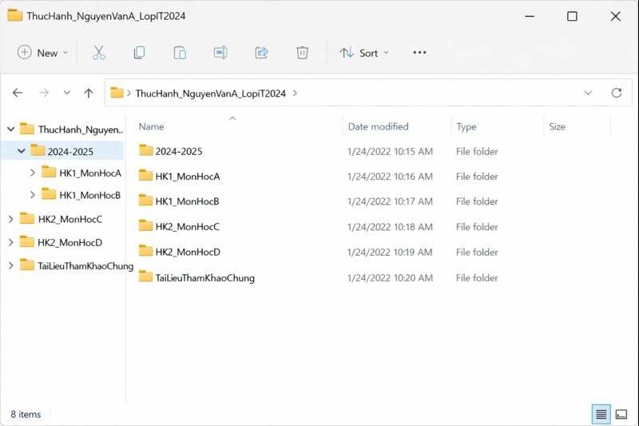
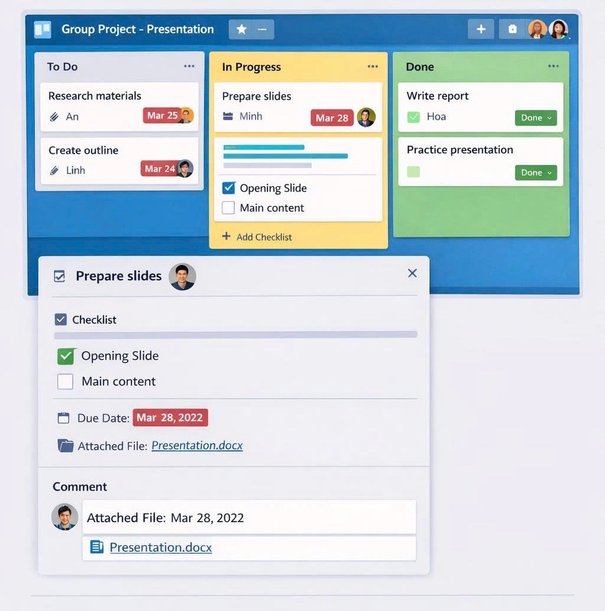

Portfolio này tổng hợp kiến thức, kỹ năng và sản phẩm học tập trong môn Nhập môn Công nghệ số và Ứng dụng Trí tuệ nhân tạo. Nội dung gồm 6 bài tập thành phần, phản ánh quá trình rèn luyện kỹ năng số, tư duy học thuật và sử dụng AI có trách nhiệm.
Email: huubao25112007@gmail.com
Là sinh viên, em đặt mục tiêu học tập là nắm vững kiến thức chuyên môn, rèn luyện kỹ năng cần thiết và đạt kết quả tốt. Bên cạnh đó, em chú trọng phát triển kỹ năng mềm và tích lũy kinh nghiệm thực tế để chuẩn bị cho công việc sau khi tốt nghiệp. Về định hướng cá nhân, em mong muốn tìm được công việc phù hợp với ngành học và có cơ hội phát triển bản thân lâu dài.
Mục tiêu của Portfolio này là tổng hợp và trình bày các kiến thức, kỹ năng và sản phẩm học tập của em trong môn Nhập môn Công nghệ số và Ứng dụng Trí tuệ nhân tạo. Portfolio giúp hệ thống hóa quá trình học tập, thể hiện khả năng ứng dụng công nghệ số và công cụ AI, đồng thời là cơ sở để phát triển kỹ năng phục vụ cho học tập và công việc sau này.
Phát triển tư duy học tập số: tổ chức tài liệu khoa học, tìm kiếm thông tin có kiểm chứng, và sử dụng AI đúng mục đích – đúng đạo đức trong môi trường học thuật.
Mỗi bài tập đại diện cho một kỹ năng số cốt lõi. Dưới đây là tổng hợp quá trình thực hiện và kết quả đạt được của từng nhiệm vụ.

Cấu trúc thư mục được thiết kế để tổ chức tài liệu học tập theo logic Năm học > Học kỳ > Môn học.
ThucHanh_NguyenVanA_LopIT2024):
Đặt tên bao gồm Tên và Lớp học để dễ dàng nhận dạng.
2024-2025) giúp quản lý tài liệu theo chu kỳ thời gian rõ ràng.
HK1_MonHocA) để dễ dàng tìm kiếm tài liệu cụ thể của từng môn học trong học kỳ đó.
BaoCao_Bai1.docx, Note_20250104.txt)
để đảm bảo tính nhất quán và khả năng sắp xếp theo loại tài liệu hoặc theo ngày tháng.
File báo cáo: Bai2.docx
| STT | Loại nguồn | Nguồn tìm kiếm cụ thể | Số lượng |
|---|---|---|---|
| 1 | Cơ sở dữ liệu học thuật | Google Scholar, Microsoft Academic | 5 (Bài báo khoa học) |
| 2 | Tạp chí khoa học chuyên ngành | IEEE Transactions on Medical Imaging, Nature Medicine | 2 (Bài báo khoa học) |
| 3 | Sách chuyên khảo | Sách về Deep Learning/Y học tính toán | 1 (Chương sách) |
| 4 | Các nguồn mở trên internet | Báo cáo của WHO, White paper từ các tổ chức nghiên cứu | 2 (Báo cáo/Kỷ yếu) |
| Mã TL | Tên tài liệu/Bài báo | Loại nguồn | Điểm (1–5) | Xếp hạng | Lý do đánh giá (tóm tắt) |
|---|---|---|---|---|---|
| TL1 | Generative Adversarial Nets | Kỷ yếu Hội nghị (Nips) | 5 | Tuyệt đối | Bài báo gốc, có tầm ảnh hưởng lớn, tác giả là người tạo ra mô hình GAN. |
| TL2 | GANs in Clinical Data Synthesis | Bài báo tạp chí (IEEE) | 4 | Rất cao | Tạp chí uy tín (IEEE), phương pháp nghiên cứu rõ ràng, tính cập nhật cao. |
| TL4 | Ethical Guidance for AI in Health | Báo cáo Tổ chức (Nguồn mở) | 4 | Rất cao | Cơ quan quốc tế có thẩm quyền (WHO), độ chính xác cao về mặt chính sách/đạo đức. |
| TL6 | Challenges of Synthetic Data | Bài báo (arXiv pre-print) | 3 | Cao | Pre-print chưa qua peer-review cuối cùng nên độ tin cậy thấp hơn. |
| TL8 | How to Build a Simple GAN | Blog cá nhân | 1 | Thấp | Tác giả không rõ ràng, không có quy trình phản biện (ví dụ để phân biệt). |
Phương pháp Tìm kiếm
Phương pháp Đánh giá độ tin cậy
Mục đích: Lập dàn ý thuyết trình hiệu quả
Nhiệm vụ học tập được chọn: Lập dàn ý chi tiết cho một bài thuyết trình kéo dài 15 phút về chủ đề “Tác động của Trí tuệ Nhân tạo đối với Thị trường Lao động”.
Nội dung Prompt:
"Làm dàn ý thuyết trình về chủ đề AI và việc làm. Dài 15 phút."
Vấn đề của Prompt:
Nội dung Prompt (phiên bản cải thiện):
So sánh kết quả đầu ra
Phiên bản cải thiện hiệu quả hơn nhờ áp dụng nguyên tắc ngữ cảnh hóa, biến AI từ công cụ tạo văn bản chung chung thành một cố vấn chuyên môn có định hướng rõ ràng:
Tóm lại: prompt hiệu quả là prompt thiết lập ranh giới và định hướng kết quả, biến đầu ra AI thành một sản phẩm có thể sử dụng ngay cho mục đích học tập/chuyên môn.

Dự án nhóm gồm 4 thành viên, thực hiện trong 2 tuần với mục tiêu hoàn thành bài thuyết trình và báo cáo môn học. Nhóm sử dụng Trello để lập kế hoạch, phân công nhiệm vụ và theo dõi tiến độ.
File báo cáo: Bai5.docx
Quy trình sáng tạo được đẩy nhanh nhờ sử dụng các công cụ AI tạo sinh, giúp chuyển trọng tâm công việc từ tạo ra sang tinh chỉnh và thêm giá trị cá nhân.
Công cụ đã dùng (tối thiểu 3):
minimalist concept art of a robot hand creating a digital painting...
(prompt chi tiết giúp tạo hình ảnh chất lượng cao, phù hợp mục tiêu).
Mặc dù AI chịu trách nhiệm khoảng 60% công việc ban đầu (tạo bản nháp/concept), phần 40% đóng góp cá nhân là yếu tố quyết định chất lượng cuối cùng:
Hiện nay, nhiều trường đại học cho phép sinh viên sử dụng AI như một công cụ hỗ trợ học tập, nhưng không chấp nhận việc dùng AI để tạo ra toàn bộ bài làm và nộp như sản phẩm cá nhân. Ví dụ, Stanford University quy định sinh viên có thể dùng AI để gợi ý ý tưởng, giải thích kiến thức hoặc hỗ trợ chỉnh sửa; tuy nhiên, người học phải chịu trách nhiệm hoàn toàn về nội dung học thuật của mình.
Việc ứng dụng AI trong học tập cũng đặt ra nhiều vấn đề đạo đức quan trọng:
Vì vậy, AI cần được sử dụng một cách có kiểm soát, trung thực và có trách nhiệm trong môi trường học thuật.
Dựa trên nghiên cứu và phân tích ở trên, tôi xây dựng bộ nguyên tắc cá nhân khi sử dụng AI như sau:
Phần này tổng hợp quá trình thực hiện Portfolio cá nhân trong học phần Nhập môn Công nghệ số và Ứng dụng Trí tuệ nhân tạo, đồng thời khái quát các năng lực đạt được, giá trị học thuật và ý nghĩa vận dụng trong giai đoạn tiếp theo.
Hoàn thiện năng lực học tập số theo hướng hệ thống: tổ chức & quản trị tệp khoa học; tìm kiếm–sàng lọc–đánh giá nguồn học thuật; thiết kế prompt để khai thác AI hiệu quả; phối hợp làm việc nhóm bằng công cụ cộng tác; và ứng dụng AI tạo sinh để hỗ trợ sáng tạo nội dung trong khi vẫn đảm bảo kiểm chứng thông tin và chuẩn mực liêm chính học thuật.
Tích hợp các bài tập thành một Portfolio thống nhất giúp theo dõi rõ tiến trình học tập, minh chứng năng lực theo rubric, và chuẩn hóa cách trình bày sản phẩm học thuật. Quá trình này rèn tư duy chủ động, khả năng tự đánh giá, và kỹ năng chuyển hóa kết quả thực hành thành một sản phẩm số có thể tái sử dụng.
Thách thức chính nằm ở việc chuẩn hóa cấu trúc nội dung và lựa chọn công cụ phù hợp cho từng nhiệm vụ (từ quản lý dữ liệu đến AI tạo sinh). Tuy nhiên, nhờ quá trình thử nghiệm–điều chỉnh, mình rút ra được phương pháp làm việc có hệ thống hơn: lập kế hoạch, chia nhỏ nhiệm vụ, kiểm tra chất lượng đầu ra và tối ưu quy trình.
Portfolio là một minh chứng học tập có giá trị: vừa tổng hợp kiến thức và kỹ năng số cốt lõi, vừa thể hiện khả năng vận dụng AI theo hướng minh bạch, kiểm chứng và có trách nhiệm. Đây là nền tảng quan trọng để tiếp tục học tập và làm việc trong bối cảnh chuyển đổi số.
Nhìn chung, dự án mang lại trải nghiệm học tập có ý nghĩa, góp phần củng cố năng lực tự học, tư duy phản biện và phương pháp làm việc có hệ thống. Đồng thời, Portfolio tạo nền tảng để người học tiếp tục vận dụng công nghệ số và AI một cách hiệu quả – minh bạch – phù hợp chuẩn mực trong các học phần tiếp theo và trong bối cảnh nghề nghiệp tương lai.